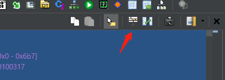
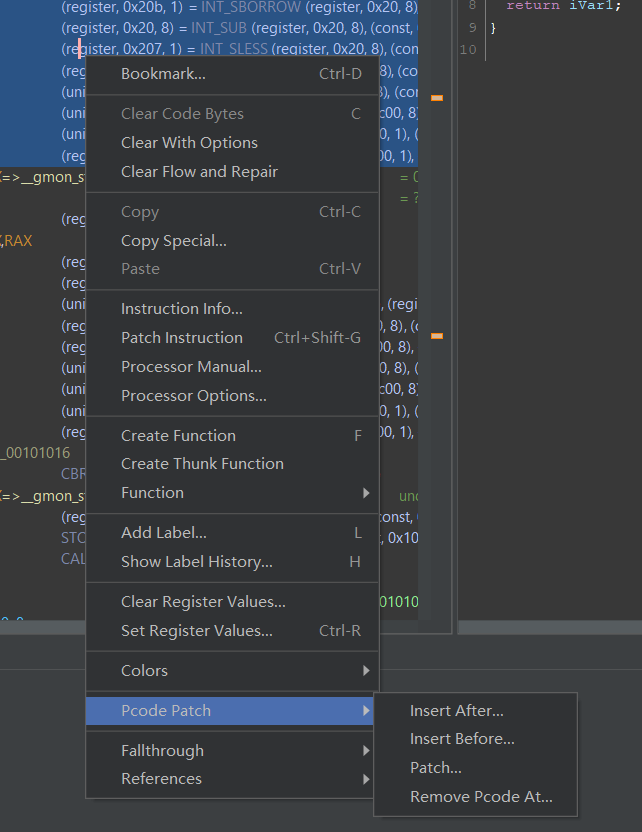
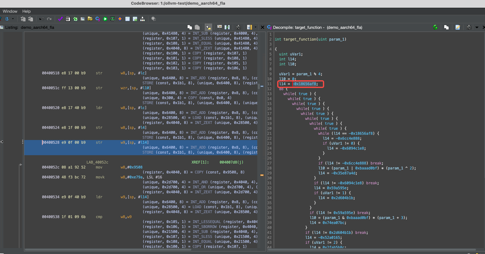

Introduction
This book is part of the bincraft project. In this book, we will be talking about the ghidracraft project, which is a forked version of Ghidra.
The topics covered in this book including:
- Our version of vanilla Ghidra docs: you can see this as just an unofficial documentation. Note that this won't be finished soon. see Vanilla Ghidra
- Documentation about the ghidracraft changes: fixings, features, design of those fixing and features. see Ghidracraft Changes
- Documentation on Ghidra internals: to help people join the development quicker. see internals
Till now, Ghidracraft is not officially released yet. The nightly build is still in progress, and should be released shortly.
If you like what we did and want to test those changes, you can always use the nightly build. But you have to make sure you are OK with those bugs.
If you encounter any bugs that we introduce, we are happy to have you firing issues about we should do next.
Compatibility Issue
The rule of thumb is to allow any ghidra user to move to Ghidracraft without breaking things. But it is not the other way around.
If you do import a project from Vanilla Ghidra, you may never get it back. Currently, only pcode patch does that.
If you have serious problem about the compatibility with vanilla Ghidra, please let us know. The project is not yet fixed, so we are quite open. If you do have many occasions that you need total forward compatibility, we might consider trying harder to achieve that.
But for now, it is a non-goal.
Unofficial Vanilla Ghidra Documentation
This chapter talks about our understanding of using the vanilla ghidra.
TODO
Ghidracraft changes
In this chapter, we will talk about our modifications to Ghidra, what should they influence, how can we use them, etc.
Ghidracraft Dark Theme
Ghidracraft has dark theme on by default, but if you want to change the theme, you can always go to the option for Ghidra and change it.
The name of the dark theme is called FlatDarcula, one of the theme provided by FlatLaf.
Change The Theme
To change the theme, you can go to the main window, goto edit -> Tool Options:

Then go to the Tool tab:

FlatDarcula is the name of our theme.
You can also choose other theme here. But some of the colors might not work under other themes. It is possible that you cannot see the characters.
To fix that, you will need to change some of the colors in the properties file. Check out color configuration for more information.
What changed?
Some show cases, if any of you cares.
- Button shadow is now in modern style

- More flattened stylings

Color Congiguration Support
Extra Color Configure
A new file is added to the final distribution: GHIDRACRAFT_INSTALLATION/support/Color.properties.
In this file, internal colors are defined, and the ghidra should follow this file to get the color.
Currently, not all colors are defined there, so still not all colors are configurable. All the colors that are configurable is already listed in this file.
If you encounter any color that is not yet configurable but really harms your eyes, feel free to fire an issue.
Syntax
- Any line starts with "#" is considered comment:
# this is a comment
- Colors are defined as a single line:
name = #RGB, for example:
Highlight.Global = #569cd6
There's nothing special about the "." (dot). The configuration treats that just part of the name. When ghidra wants some color, it will look after this name. The dot is just for better categorizing the color names.
- The colors are possible to be referenced, in a form like
${referenced color name}, for example:
Highlight.Default = ${White}
By default, a Color.properties file is already provided.
Ghidracraft cannot work without a Color.properties file.
Desired Usage
This feature is designed to be used for those theme authors.
When somebody is willing to add a theme to Ghidracraft, by adding an extension (Java swing themes can be carried within a Ghidra extension) and a Color.properties file.
So, a user of this custom theme can just load the extension, swith the theme, replace the Color.properties file, and everything will be just fine.
However, this is not the case for current Ghidra because of the hardcoded colors within project. That's why we have this feature.
Pcode Patch
Pcode patching is about modifying the pcode generated by Ghidra in the first place.
By modifying those, you are able to introduce your own semantic without changing any of the actual bytes which is required when patching with assemblies.
Current pcode patching can be used both with or without UI.
With UI
First, you need to enable the pcode display. This can be done by:
- open up "edit the listing fields"

- select
Instruction/Data, double clickPCodefield.

- Close the "editing the listing fields" by click that button again. (the button in step 1)
It's recommended to enable raw pcode format when displaying. When patching, this is the only acceptable format (at least for now.)
This can be done in:
Edit -> Tool Options -> Listing Fields -> Pcode Field -> Display Raw Pcode
Enable it.
To patch the IR, you can right click on any pcode you'd like to:
- modify
- insert before
- insert after
- remove

After click the one you want, you might get a new window poping up for exact pcode you want (except for remove).
Input the pcode instruction in raw format. The format is:
- Varnode:
(space_name, offset, size). For example,(register, 0, 0) - Pcode:
output_varnode = OPCODE INPUT_VARNODE1, INPUT_VARNODE2, .... For example,(unique, 0, 8) = INT_ADD (unique, 8, 8), (const, 8, 8).
The unique space is normally used for temporary vars. Opcode should be in uppercase (we might also allow lower case as well in the future).
The full list of the opcode can be refer to the ghidra's official pcode reference.
Without UI
You can also use pcode patching with script. To do this, what you need:
- get the instruction you wish to patch.
- construct the
RawPcodearray, which can be both the original pcode or the pcode you specify yourself. Also, you might findPcodeRawParseruseful to generateRawPcode. - call
inst.patchPcode(array_of_raw_pcode)to patch it.
Note that the patched pcode is correspond to the instruction. That means, once the instruction is undefined, the pcode you patched is gone as well.
An example of Jython script of patch the pcode:
from array import *
from ghidra.program.model.pcode import RawPcode, RawPcodeImpl, PcodeOp, Varnode, PcodeRawParser
address_factory = currentProgram.getAddressFactory()
inst = getInstructionAt(address_factory.getAddress('0x101001'))
# Goal: patch pcode `(unique, 0, 8) = COPY (const, 8, 8)` to this instruction
# option 1: construct raw pcode yourself
unique_space = address_factory.getAddressSpace('unique')
const_space = address_factory.getAddressSpace('const')
inputs = array(Varnode, [Varnode(const_space.getAddress('0x8'), 8)]) # inputs -> (const, 8, 8)
output = Varnode(unique_space.getAddress('0x0', 8)) # output -> (unique, 0, 8). This can also be None, for example in BRANCH opcode.
pcode = RawPcodeImpl(PcodeOp.COPY, inputs, output)
patch_pcode = array(RawPcode, [pcode]) # we need an array to patch
inst.patchPcode(pcode) # patch the pcode! Note that this will TOTALLY OVERRIDE that instruction's pcode.
# option 2: use the parser, so we can use the same syntax as with UI
patch_pcode = PcodeRawParser.parseRawPcode(address_factory, '(unique, 0, 8) = COPY (const, 8, 8)')
inst.patchPcode(pcode)
Database Issue
After patching, the patched pcode is going to be recorded in the database. If you send the database to other people (well, he/she has to use Ghidracraft as well, not vanilla Ghidra), the patched pcode should be remained.
Example
Brainfuck Decompiltion
TODO
OLLVM Deflatten Script
OLLVM is a commonly used compiler-level obfuscation technique. One of the core feature is called control flow flattenning which adjusts the basic blocks within a single function to make the decompiled result highly verbose.
OLLVM works on different architectures as it reuses LLVM compiler framework which in turn works on different architectures.
By using pcode patching feature, we have achieved half-automatically OLLVM control flow flattenning deobfuscation.
Usage
Step 1: find the script.
Open up the script manager, search for ollvm_de_flattening.py script.
Step 2: find the initial block id number (a magic number)
For each program obfuscated with OLLVM control flow flattening, a bunches of magic numbers are used to indicate which block is to execute next.
This step requires you to highlight out (by click mouse left-button on the number) the first magic number.
Normally the magic number will appear above the beginning of the loop.

Step 3: run the script
By double clicking the script, it should deobfuscate the control flow flatening.
Supported Architectures
| Arch Names | Support |
|---|---|
| x86 | ✔️ |
| x86-64 | ✔️ |
| arm | ✔️ |
| aarch64 | ✔️ |
| mips64 | ✔️ |
| ppc64-le | ✔️ |
Note
- This only works for OLLVM, not any control flow flattening scheme.
Shorter Decompiled Variable Names
By default, Ghidra has a verbose name generated for decompiled code.
To use shorter names, you can enable this by: Edit -> Tool Options -> Decompiler -> Analysis -> Short variable names.
This option is not enabled by default.
Ghidra Internals
TODO